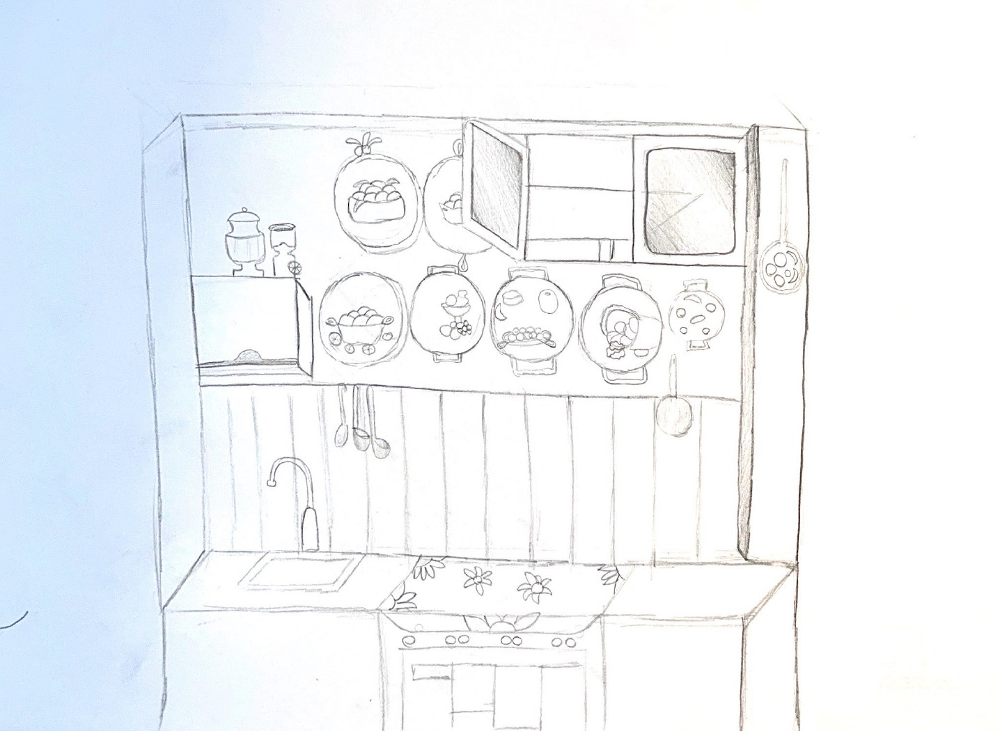

<script src="head.js"></script>
<script src="inner.js"></script>

  <main id="main">

    <!-- ======= Breadcrumbs ======= -->
    <section id="breadcrumbs" class="breadcrumbs">
      <div class="container">

        <ol>
          <li><a href="index.html">Home</a></li>
          <li>Museo degli attrezzi</li>
        </ol>
        <h2>Ulivo pensante</h2>

      </div>
    </section><!-- End Breadcrumbs -->

    <!-- ======= Portfolio Details Section ======= -->
    <section id="portfolio-details" class="portfolio-details">
      <div class="container">

        <div class="row gy-4">

          <div class="col-lg-6">
            <div class="portfolio-details-slider swiper">
              <div class="swiper-wrapper align-items-center">
                  <div class="swiper-slide">
                      
                  </div>
                <div class="swiper-slide">
                  
                </div>
                <div class="swiper-slide">
                  
                </div>
              </div>
              <div class="swiper-pagination"></div>
            </div>
          </div>

          <div class="col-lg-6">
            <div class="portfolio-info">
              <h3>Informazioni</h3>
              <ul>
                <li><strong>Categoria</strong>: Museo</li>
              </ul>
            </div>
            <div class="portfolio-description">
              <h2>Descrizione</h2>
              <p>
                  La taverna di Franco, nata quasi 47 anni fa e, viene usata come punto di ritrovo in famiglia per le festività </p>
            </div>
          </div>

        </div>
		
		<div class="row gy-4">
		  <div class="col-lg-12">
			<div class="portfolio-description">
			  <h2>La taverna di Franco/h2>
			  <p>
                La taverna di Franco è nata quasi 47 anni fa e, ancora oggi, viene usata come punto di ritrovo in famiglia per le festività.
                In origine, era un garage, ma poi il proprietario decise di dedicare questo luogo alla sua passione, aggiungendo col passare del tempo oggetti che gli ricordavano e rievocavano molti ricordi della sua vita.
                Appena si entra in questa sala, ciò che più risalta all’occhio è una bacheca addobbata da alcune spille che il signor Franco ha ricevuto in dono da dalle associazioni internazionali.
                Le pareti della stanza sono piene di oggetti storici, alcuni anche risalenti a 200-250 anni fa. Per esempio:
                - La macchina da cucire, ancora utilizzabile, nella quale si inseriva un filo che girato con la manovella permetteva di ottenere una cucitura;
                - I ferri da stiro a vapore che venivano riempiti di acqua bollente o di carboni riscaldati. Tra questi, il mini ferro da viaggio che le signore portavano in borsa;
                - Le selle degli asini, a cui venivano attaccati dei pesi ai lati per trasportare gli oggetti in montagna;
                - La burriera, che è un arnese utilizzato per produrre il burro;
                - I parastinchi, a lui molto cari poiché appartenenti alla madre, che si allaciavano all’altezza del polpaccio e si utilizzavano per andare a cavallo;
                -Il torchio, utilizzato per fare il vino, nel quale si inseriva l’uva dalla quale, per mezzo di una leva che faceva pressione, si otteneva il mosto;
                - La bascuglia, che è simile a una bilancia, ove per sapere il peso di un oggetto si utilizzavano dei pesi di varia massa;
                - Il braciere, nel quale si inserivano dei carboni ardenti;
                - Il fuso, in cui si poneva della lana grezza che veniva cardata e attorcigliata per renderla sottile;
                - Lo schiaccia fave, che serviva a dividere la buccia dalla parte commestibile;
                - Lo sfregatoio, usato dalle donne per lavare i vestiti nel fiume.
              </p>
			  <p class="firma">Redattori</p>
			</div>
          </div>
		</div>

      </div>
    </section><!-- End Portfolio Details Section -->

  </main><!-- End #main -->

  <script src="footer.js"></script>